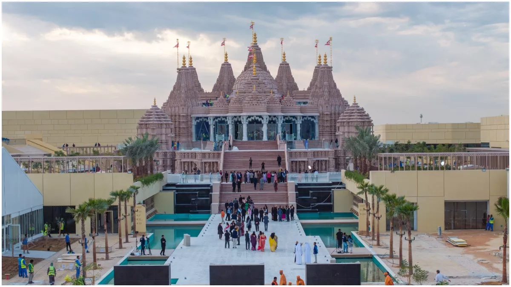

BAPS Hindu Mandir Abu Dhabi is a traditional Hindu temple built by the BAPS Swaminarayan Sanstha in Abu Dhabi, United Arab Emirates (UAE). Inspired by Pramukh Swami Maharaj (1921–2016) and consecrated by Mahant Swami Maharaj on 14 February 2024, this is the first traditional Hindu mandir in Abu Dhabi. In 1997, Pramukh Swami Maharaj envisioned a mandir in Abu Dhabi. In August 2015, the UAE government announced they would provide the land for the mandir. Sheikh Mohammed bin Zayed Al Nahyan, the Crown Prince of Abu Dhabi, gifted 27 acres of land for the mandir. In September 2019 the mandir gained legal status, and in December 2019, the construction commenced. The mandir is constructed from pink sandstone from northern Rajasthan and marble from Italy. The mandir stands 108 feet tall, 262 feet in length and 180 feet in width. This is the first Hindu stone mandir to undergo complete digital modeling and seismic simulations during the construction process.[3]
